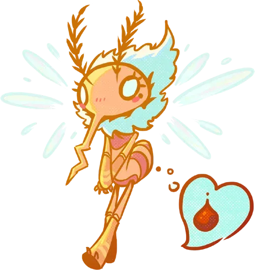

Käfer bauen I
Aspekt-Gruppen
BeißerSaugerGuckerPanzerSchleimFühlerKrabbelbeineGreiferFlügelDrüsenSchwänze…Fertigkeiten
Käfer bauen II
Überblick
Du wärst der Schrecken jedes Lutscherstands, falls es so etwas noch gibt. Wer einen Sauger als Aspekt nimmt, zeigt dem Tisch: Schlürfen und Verdauen sollen für diese Figur eine große Rolle spielen. Wählst du keinen Aspekt von dieser Seite, heißt das nicht, dass du keine Zunge hast … aber ohne Aspekt gibt es keinen mechanischen Bonus.Warum Sauger?
- Weil dir Geschmack wichtig ist
- Weil du Sachen vollsabbern willst
- Weil Spucken dich wie einen Rowdy aussehen lässt
- Weil du genug Taschentücher hast
Frag dich …
- Was hältst du von Riesenlutschern? Scheußlich oder lohnende Herausforderung?
- Isst du heimlich oder schlingst du vor allen?
- Hast du je etwas Ungenießbares gefunden, und warum?

Augmente je +2 Nektar
Säuredrüse (Splurk) +♥
Vorteil: Verbrennen, um Brutzeln für eine Aktion als Gigabrutzeln zu behandeln.
Bitter (Uru) +♥
Vorteil: Wähle einen Gefahrentyp – Quasseln zählt als Gigaquasseln bei Angriffen auf ihn.
Feinschmecker (Doshi) +•♥♥
Vorteil: Konflikte als Triumphe beim Suchen. Nachteil: Schwach gegen starke Gerüche.
Sabbernd (Raugi) +♥
Vorteil: Stimmung negativ ziehen, um beim Anfreunden ein Desaster als Konflikt zu behandeln.
Eruptiv (Bomi) +•♥♥
Vorteil: Tempo-Abzug bei Brutzeln ignorieren. Nachteil: Komplex-Abzug bei Brutzeln verdoppeln.
Schleusentor (Jushu) +•♥
Vorteil: Bricht die Leiste dieses Aspekts, ignorierst du für den Rest der Szene Panzer-Abzug.
Nebelnd (Lo) +♥
Vorteil: Im Licht sinkt jeder Panzer-Abzug für dich und deine Verbündeten um 1.
Giftmantel (Soza) +♥
Vorteil: Einmal pro Szene Stimmung negativ ziehen, um bei einer Rauferei-Aktion alle Abzüge zu ignorieren.
Schattengeküsst (Pata) +♥
Vorteil: Im Dunkeln Härte-Abzug beim Anfreunden ignorieren.
Süßling (Fwasomi) +♥♥
Vorteil: Heilen mit süßen Bröckchen leert doppelt so viele Herzen.
Klebend (Globa) +♥
Vorteil: Verbrennen, um Werkeln für eine Aktion als Gigawerkeln zu behandeln.
Flüsternd (Vefi) +•♥
Vorteil: Beim Anfreunden zählen 1er als 6er.